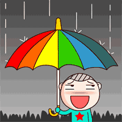

下班了下雨了 沒傘怎麼回家呢？
梅雨季到了！別只會說It's rainy，快學會這4種下雨的英文說法
- It’s drizzling. 在下毛毛雨了
- shower 陣雨
- It’s pouring. 下傾盆大雨
- It never rains but pours.
- save sth for a rainy day
- 把事物留到下雨天時再用，就是「未雨綢繆」的意思通常這個片語會用在金錢上，是個非常常見的片語喔！
例句：I’ve been saving money for a rainy day. （我一直以來都把錢存著以備不時之需。）
快學會這4種下雨的英文說法
鋒面(front) 報到！期待許久的雨水終於來了，台灣乾渴許久的水庫 (reservoir) 終於可以解渴了。不過要用英文跟別人聊下雨，還只會 It’s rainy 嗎？
雨勢大小會影響你怎麼用英文形容喔，所以千萬不要只會 It’s rainy 了。今天小編要帶大家看幾個簡單好學的句子來形容下雨天，以後用英文聊天氣不會再詞窮囉！
台灣的梅雨季 (rainy season/ monsoon season) 到了，我們就從毛毛細雨開始學起吧！
- It’s drizzling. 在下毛毛雨了
- drizzle (v.) 下毛毛雨 (n.) 毛毛雨
除了 drizzle 還可以用 sprinkle 或 spitting 這個字，例句：
It began to sprinkle in the afternoon. （下午就開始下起毛毛雨了。）
It’s spitting. （在下毛毛雨了。）
- shower 陣雨
- shower 除了用來形容洗澡，這個字也可以指一陣一陣的雨。如果要特別形容雷陣雨，可以再加上雷聲這個字：thunder shower
例句：There will be a thunder shower tomorrow afternoon. （明天下午會有雷陣雨。）
肚子餓